斗湖聯絡處
一個人人避開的「黑區」，怎樣變亮？

先別急著下結論，讀完再說說你的想法～
這一篇講斗湖聯絡處：2000年，一位辭職回鄉的同仁，把慈濟的種子帶回沙巴東南角。
你會讀到兩天賣出的紙蓮花、躲著丈夫偷偷做環保的媽媽，還有一個從「黑區」變成「亮區」的木屋村。
下面是原書的節錄，紅色底線是我們替你標出的轉折點。
讀之前：一個地方被大家叫做「黑區」，你敢走進去嗎？
種子回鄉
2000年，一位同仁辭職回到斗湖。閱讀引導
慈濟真正在斗湖萌芽，是2000年在亞庇慈濟擔任同仁的梁麗清（慈幸），因家中變故辭職回鄉，發心要在斗湖推動慈濟，才將慈濟種子撒播在當地。

還想著推動慈濟！
猜一猜閱讀引導
2001年印度大地震，山打根志工到斗湖街頭義賣紙蓮花。兩天的時間，募得多少朵？
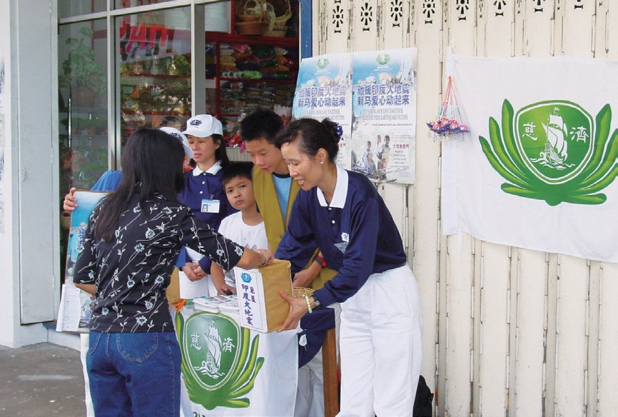
當地佛教會的成員聶潤珠（慈潤）覺得慈濟這個佛教團體很新奇，想多瞭解而借出自家餐廳的大廳，讓慈濟舉辦茶會與共修。共修會上志工陳榮昌（濟觀）發心借出放影機的因緣，後續也出借自宅作為共修場地。
都借出來了！
- 35位慈誠委員p.761
- 67位志工p.761
- 6,053位會員p.761
每個環保站都是寶山
大火之後，和一位不放棄的媽媽。閱讀引導
2016年8月，斗湖丹絨巴都登加甘榜巴雅發生大火，燒毀了四十六間板屋，導致九十九戶，共四百五十六人流離失所。
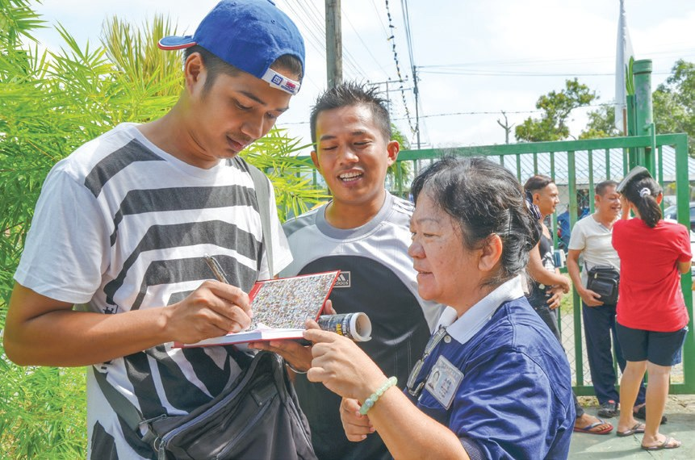
一下子沒了家……
志工李俞伶分享，剛開始做環保時遇到許多困難，如丈夫不認同，所以躲著丈夫偷偷地做環保，也曾遇到店家揶揄她：「做環保不如好好去工作。」讓她感到十分委屈，還好有其他環保志工一路的陪伴，李俞伶沒有放棄，堅持實踐環保，家人也漸漸改變想法，不再反對她做環保。

家人也改變了！
「每個環保站都是寶山，只要伸出手，寶就來了。……」
上人說・p.763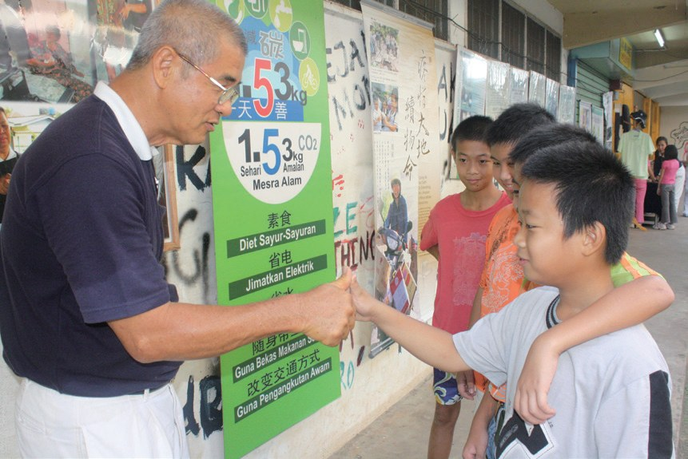
親子一起長大
三位志工，決心試辦兒童班。閱讀引導
斗湖志工鍾惠妮、李俞伶與曾佩玲參訪後，三人下定決心試辦兒童班。
2月斗湖兒童班正式開課，首屆招收18名學童。
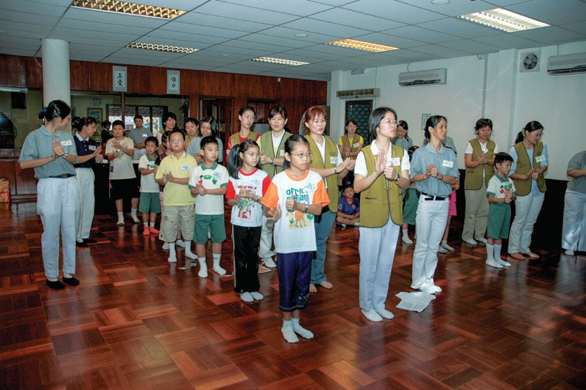
「孩子是父母的影子，父母可藉由孩子檢視自己的行為；期待孩子改變，父母也必須改變自己。……」
斗湖負責人羅珍愛分享・p.766
爸媽也要先改變！
「資源回收是在愛護地球，人人都應盡力而為，希望能帶動更多的人來參與。做環保讓我們一家人相處更融洽，孩子們也做得很歡喜。」
拿篤居民楊天生說・p.768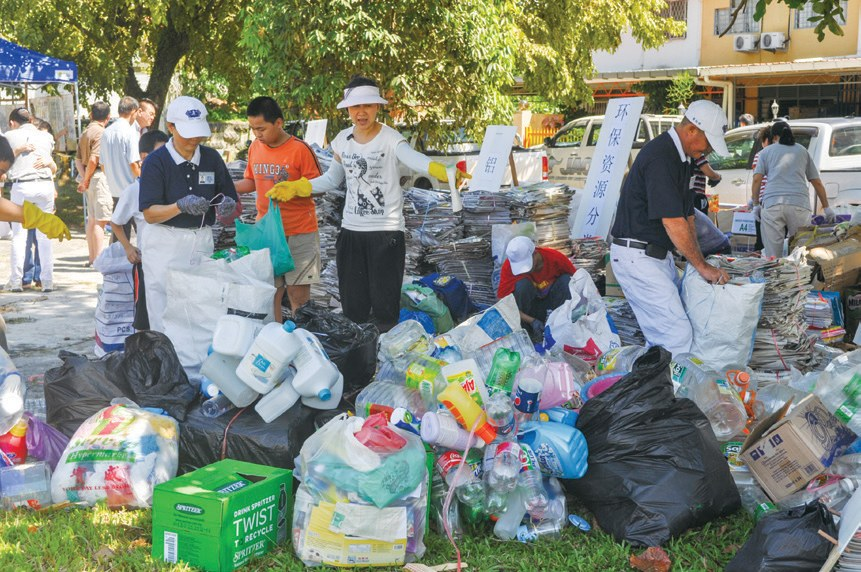
甘榜狄丁岸
沒有身分證的人，住在海邊的木屋村。閱讀引導
甘榜狄丁岸是一個非法木屋區，超過三分之二的居民是無國籍人士，包括菲律賓蘇祿人、印尼人、巴瑤人等。
加上政府並未正視這個區域，也讓許多民眾鋌而走險從事非法行業，或是犯罪行為，使這裡成為當地人眼中的「黑區」，令人避而遠之。
志工敢嗎？
在教育方面，從2016年起規劃開辦「慈濟無國籍兒童學習中心」，並於2017年3月正式開課，設有英文、馬來文、伊斯蘭教經文及品格教育課程，截至2021年，無國籍兒童學習中心已有逾百位學童。
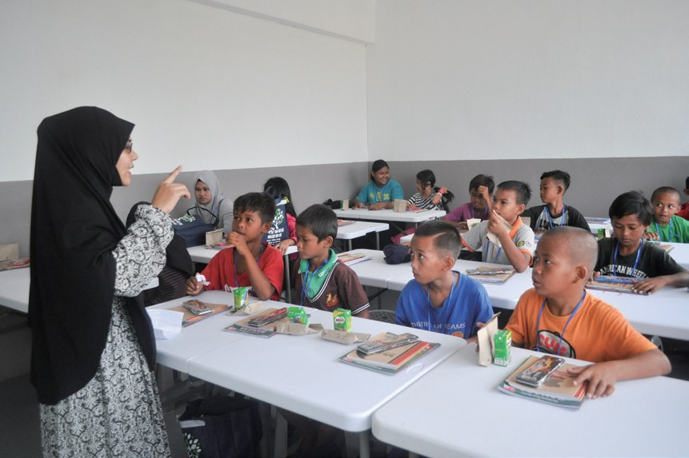
「……從人道主義關懷的角度，幫助這些外來者，慈濟的發音在馬來文裡，就是純潔（Suci）的意思。」
村長阿布巴卡說・p.770
在馬來文是「純潔」！
「……現在已經變得乾淨、亮麗了；那一群打架、賭博的幼小孩子已經能去上學了。……」
上人說・p.7702020年9月25日，斗湖志工運送所需物資，共出借230張福慧床及7個帳篷到斗湖醫院及斗湖綜合體育中心。
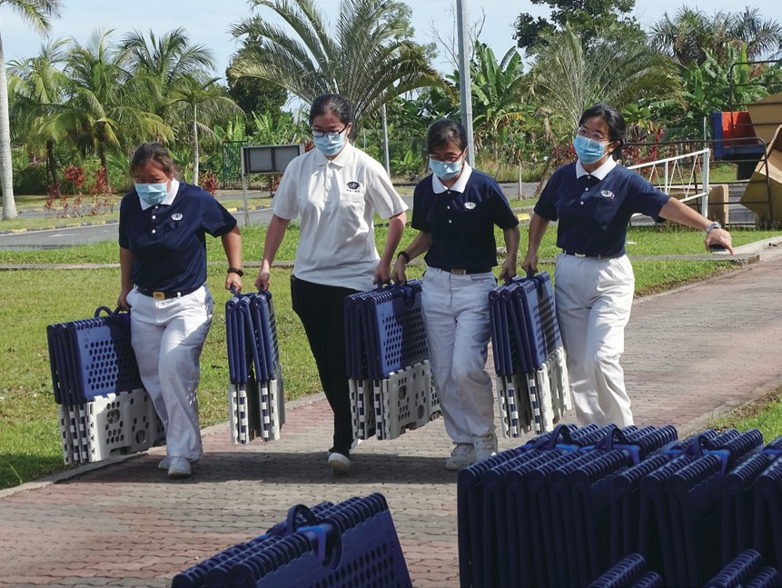
提天下菜籃
第一位成為志工的照顧戶，和一位環保站站長。閱讀引導
2002年，黃裕發的妻子在亞庇醫院復診時不幸跌倒受傷，導致腦部缺氧陷入昏迷，搶救後仍成為植物人。
隔天志工迅速到醫院訪視後，立即援助黃裕發機票，協助其妻子搭機轉院的事項，並安排慈濟人醫會醫師全程同行。
一起坐飛機！
斗湖志工一路以來的陪伴，黃裕發感恩於心，決定加入慈濟做環保。他在家中成立環保點，環保日就將回收的物資送到慈濟環保站，再進行整理分類。
黃裕發化悲傷為力量，更積極投入志工活動，於2011年返臺受證。黃裕發（濟根）是斗湖首位成為志工的照顧戶。
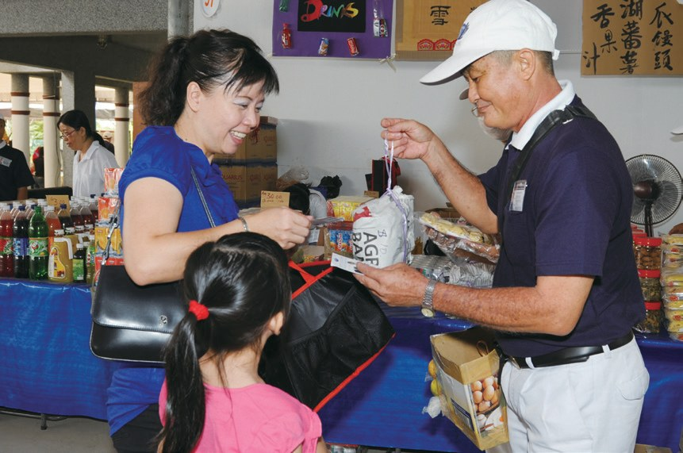
各種意想不到的困難，曾讓顏玉琴萌生放棄的念頭。
「女人不單只為一個家庭付出，提家庭的菜籃；應該也可以承擔起社會的責任，把自己的愛心延伸給有需要幫助的人，好比提天下菜籃，這也是一種大愛的布施。」
上人開示・p.775提到天下的菜籃！
「……我在慈濟裡學到，做該做的事是智慧，做不該做的事是愚癡。只要有方向，做慈濟就不難；只要有愛，凝聚大家一起做環保更不難。」
顏玉琴分享・p.775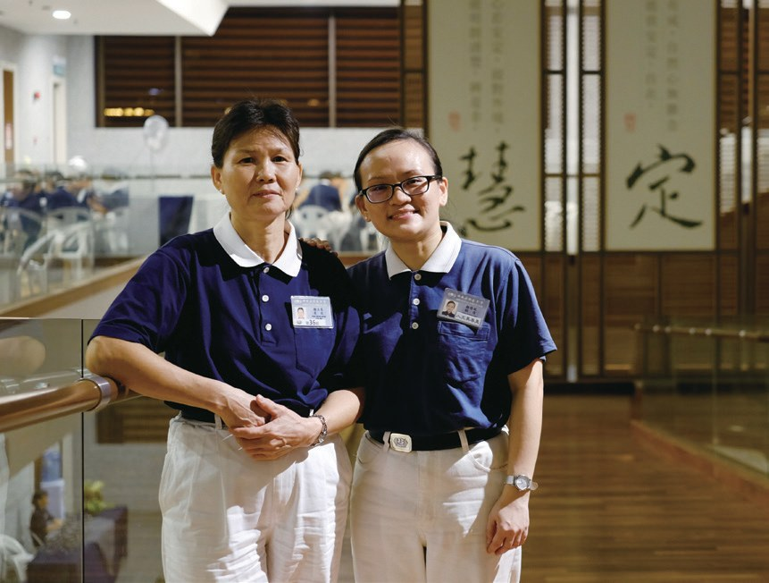
停一停：誰讓你記住了？閱讀引導
選一位你印象最深的人。沒有標準答案。
有人辭職回鄉推動慈濟，有人躲著丈夫做環保，有照顧戶變成志工，有主婦提起天下菜籃。哪一位讓你最有感覺？

一起回頭看看吧～
回望
依本章原文整理，每一條都標了原書頁碼。閱讀引導
背後原因
斗湖怎樣有了聯絡點

小川一開始沒有志工，後來怎麼會成立聯絡點？
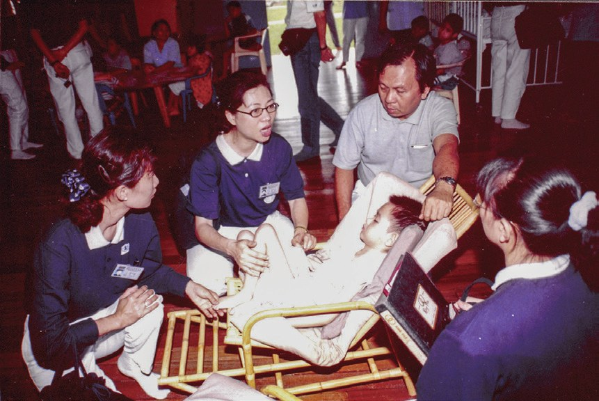
種子回鄉梁麗清回到斗湖推動慈濟。p.759
- 一塊大福田
兩天募得1,000朵紙蓮花。p.759
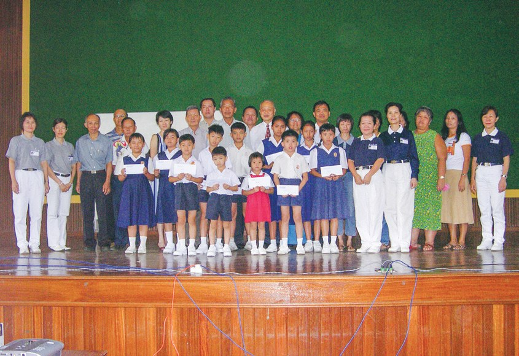
成立聯絡點2003年斗湖聯絡點正式成立。p.760
後續發展
斗湖一路走來

小禾從第一場茶會到無國籍兒童學習中心，經過了多少年？
- 1997
翁敦學到斗湖舉辦慈濟茶會。p.759
- 2001.5
斗湖街頭義賣紙蓮花。p.759
- 2003.5.15
斗湖聯絡點正式成立。p.760
- 2007.2
斗湖兒童班開課。p.765
- 2012.7.22
拿篤團結村公園設立環保站。p.767
- 2017.3
無國籍兒童學習中心開課。p.769
狄丁岸的轉變
以前和後來
小川志工長期陪伴之後，狄丁岸有什麼不同？
- 環境充滿垃圾變得乾淨、亮麗p.770
- 孩子打架、賭博孩子去上學了p.770
- 沒有教育設施學習中心逾百位學童p.769
以上只整理本章寫到的事；書裡沒寫到的，我們不替它下結論。
回頭看讀前的選擇閱讀引導
狄丁岸曾是當地人眼中的「黑區」（p.768）；上人說那裡已經變得乾淨，打架、賭博的孩子去上學了（p.770）。不是不怕，是一分使命感讓人走進去，也讓黑區亮起來。
會不會回來當老師？
只有你自己看得到喔！
準備好了就一起出發～